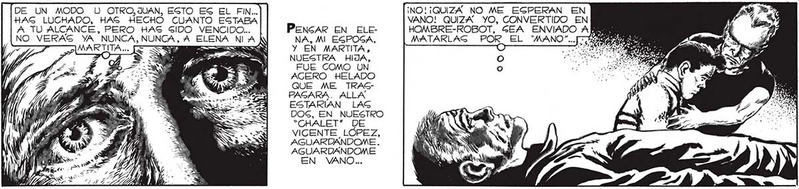
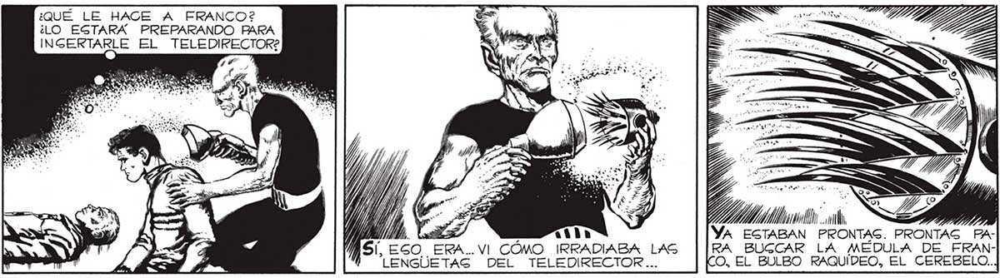
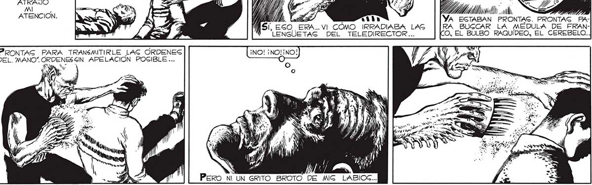

DE UN MODO U OTRO,JUAN, ESTO ES EL FIN. ¡NO! ¡QUIZÁ NO ME EGPERAN EN 157 HAG LUCHADO, HAS HECHO CUANTO ESTABA VANO! QUIZA YO, CONVERTIDO EN A TU ALCANCE, PERO HAS SIDO VENCIDO... PencAR EN ELE- HOMBRE-ROBOT, GEA ENVIADO AM NO VERAS YA NUNCA, NUNCA, A ELENA NIA NA, MI EGPOGA, MATARLAG POR EL "MANO"... [Y Jj Y Y EN MARTITA, e NUESTRA HIJA, FUE COMO UN AGERO HELADO QUE ME TRASGPAGARA. ALLA ESTARÍAN LAS DOG, EN NUESTRO “CHALET” DE VICENTE LÓPEZ, AGUARDANDOME. AGUARDANDOME EN VANO... ¿QUÉ LE HACE A FRANCO? ¿LO ESTARÁ PREPARANDO PARA HASTA EL ES EL TELEDIRECTORE HORROR TIENE GUS IMPOGIBLES. POR UN INGTANTE SE ME NUBLO EL CEREBRO. HAC: ATRAJO E a / 1 ler ¿E a EE MI o AG e JN S , Ea tas ci 200 ak ATENCION. YA ESTABAN ES PRONTAS PAMS EGO ERA... VI CÓMO IRRADIABA LAS RA BUGCAR LA MÉDULA DE FRANENClAS DEL TELEDIRECTOR.. O. EL BULBO RAQUÍDEO, EL CEREBELO.. PRONTAS PARA TRANSMITIRLE LAG ÓRDENES DEL. MANO”. ORDENES £IN APELACIÓN POSIBLE .. NS Pero Ni UN GRITO BROTO DE MIG


